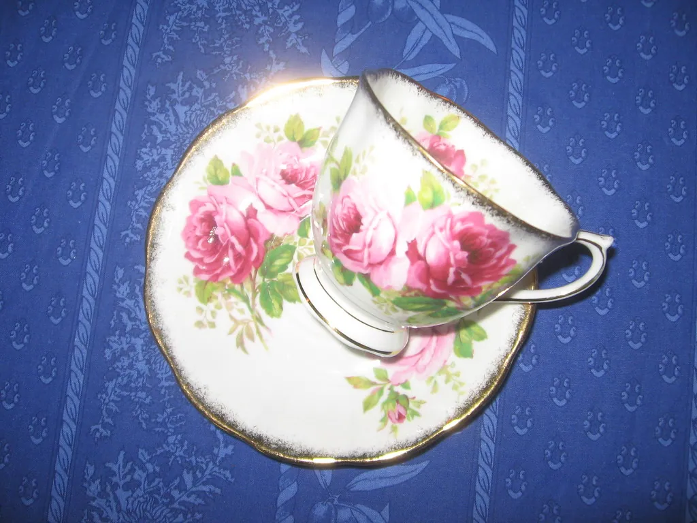

Welcome to Teacup Puzzlers
Put the kettle on, find your favorite chair, and settle in. This is a cozy little nook of gentle brain games — word ladders, anagrams, fond nostalgia trivia, and riddles — made for the simple pleasure of a quiet, puzzling hour.

Today's Puzzle
A fresh little mix each day — an anagram and a missing-letter word to solve with your morning cup.
Word Games
Word ladders, teatime anagrams, and missing letters, all in tidy tabs you can flip between at leisure.
Trivia by Decade
Fond, checked questions from the 1950s through the 1980s — the events, inventions, and everyday life you remember.
Logic & Riddles
Classic riddles and gentle logic puzzles, with the answers tucked just out of sight until you want them.
Printables
Print-friendly puzzle sheets with answer keys, ready for the porch, the car, or a visit.
A warm hello
We are so glad you are here. Teacup Puzzlers began as a simple wish for a puzzle page that felt less like a test and more like a visit — somewhere unhurried and kind, where the puzzles are gentle, the type is large, and nobody is keeping score. Think of it as a friend's kitchen table on a rainy afternoon, with the kettle on and a pile of puzzles between you.
Everything here is made by hand and offered freely. There is nothing to buy, nothing to sign up for, and not a single advertisement to shout over the fun. We ask only that you make yourself at home. Start with whichever tile above catches your eye, and go at exactly the pace that suits you. There is no wrong way to spend time here.
What you'll find in the nook
Our Word Games are the heart of the place — gentle word ladders that let you climb from one word to another a single letter at a time, teatime anagrams to unscramble, and missing-letter puzzles to complete. They live in tidy tabs, so you can flit from one to the next as the mood takes you.
For a dose of fond remembering, Trivia by Decade gathers checked, friendly questions about the 1950s through the 1980s — the inventions that arrived, the events everyone watched, and the small furniture of everyday life in those years. Our Logic & Riddles page offers a slower, cleverer sort of pleasure, and our Printables let you carry a puzzle away from the screen entirely, onto paper and into your armchair.
And if you only have a moment, Today's Puzzle serves up a small daily mix — just enough to go with a single cup.
You need not work through any of it in order, and you need not finish anything at all. Some days you may fancy the quick satisfaction of an anagram; other days, the slow absorption of a word ladder or the fond remembering of a decade round. Wander wherever the mood leads, leave whenever you please, and know that everything will be just as you left it when you next drop by. That freedom to roam at your own pace is rather the whole point of the place.
New to all this? You are most welcome
If puzzles are not yet a familiar friend, or if it has been many years since you last did one, please do not feel the least bit shy. There is no level you need to have reached to belong here, and nobody will ever see how you do. Every game comes with a plain guide, a hint, and a reveal button, so help is always within easy reach, and you can lean on it as much or as little as you like. Start with the gentlest thing that appeals — a missing-letter word, perhaps, or today's little pair — and let your confidence grow at its own pace.
Made for comfortable solving
We have taken particular care to make this a comfortable place to spend time, especially for readers who appreciate a larger, calmer page. At the top of every page you will find a Text size control — tap A+ or A++ and every word grows, with your choice remembered on your own device. The colors are soft but high in contrast, the buttons are large and easy to tap, and nothing flashes, pops up, or hurries you along.
Every puzzle can be checked when you want reassurance and revealed when you would rather simply see the answer; there is never any shame in peeking. And wherever it makes sense, you can print a clean paper copy to solve away from the screen. We want the technology to disappear and leave only the pleasant, old-fashioned pleasure of a puzzle and a cup of tea.
There is no hurry here
If we have one guiding rule, it is this: take your time. So much of modern life hurries us along — timers, streaks, scores, notifications nudging us to go faster and do more. We wanted to make a place that does the opposite. Here there is nothing counting down, nothing keeping score, and nothing to lose by lingering over a single puzzle for as long as it pleases you. Solve one game or a dozen; finish a round or wander off halfway; come back tomorrow or next month. The nook does not mind, and neither do we.
This gentleness is quite deliberate, and it is especially for readers who find much of the web a little too fast, too loud, or too demanding. A puzzle should soothe, not stress; it should feel like a comfortable chair, not a waiting room. So settle in without the slightest pressure. Every game can be checked when you want reassurance and revealed when you would simply rather know, and there is never any shame in either. The whole point of this little nook is to be a calm, kind place to spend a quiet hour — nothing more, and nothing less.
An honest word about us
Teacup Puzzlers is an independent little nook of cozy brain games. It is free from top to bottom, it sells nothing, and it gathers nothing about you beyond the text size you choose, which never leaves your device. Teacup Puzzlers is an independent educational website and is not connected to any game maker or brand; where a puzzle resembles a familiar favorite, it is made in fondness and from scratch, never copied. So pour yourself something warm and begin wherever you like — the nook is always open.